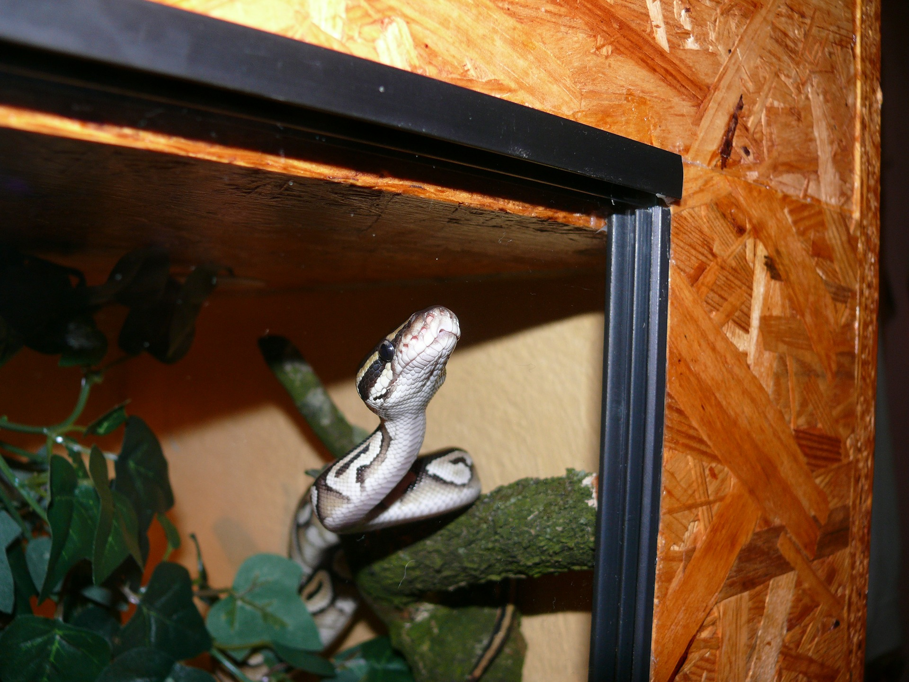

Haltung
Schlangen Sind zwar Pflegeleicht sie sind jedoch nicht leicht zu hallten bzw. Giftschlangen.
Die Grösse des Terrariums kommt auf die Art an die man Kaufen will an.
Die Ausstattung ebenso (Kletter- und Versteck Möglichkeiten).
Zusätzlich sollte man ein zeitgesteuerte Strahler einbauen da sie Kaltblüter sind und nicht am Tag die Gleiche
Temperatur wollen wie in der Nacht

Eine der pflege leichtesten Schlangen sind Nattern (Kornnatter) Schlagen gelten als Pflege
leichte Tiere jedoch sollte man sich um sie kümmern
Einige schlangen benötigen auch ein gewisses Klima.
Schlangen sind dazu nicht für klein Kinder gedacht.
Grüne Baumpyton
Die Grüne Baumpyton mag es eher tropisch mit einem stabilen Kletterbaum.
die Temperatur ist tags über 22 - 33 °C und Nachts 20 - 25 °C. die Nahrung währen Ratten und Mäuse.
Kornnatter
Die Kornnatter brauchen versteckmöglichkeiten, etwas zum klettern, Wassergefäss und eine Bodenheizung.
Die Temperatur am Tag ist von 22 - 28 °C nachts bis 18 °C. Sie Essen Ratten und Mäuse.
Es sollte zudem eine Winterruhe von 5 - 12 °C geben